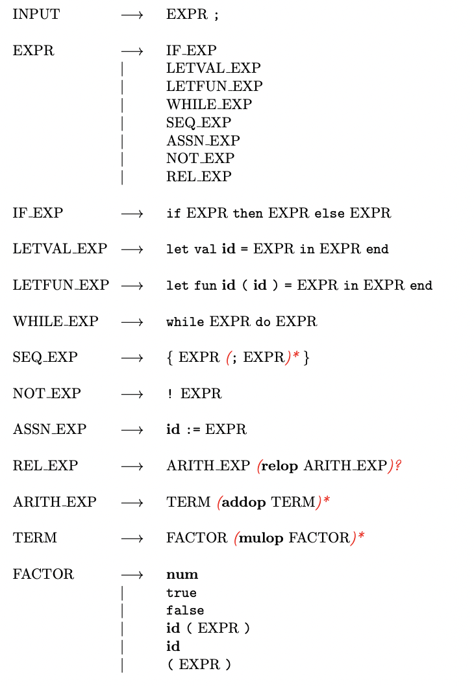
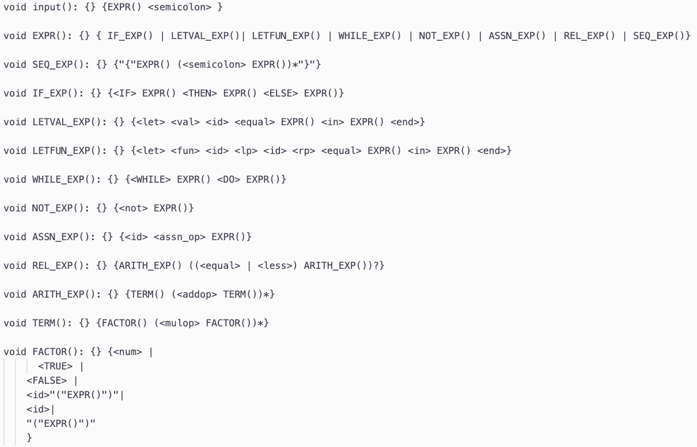
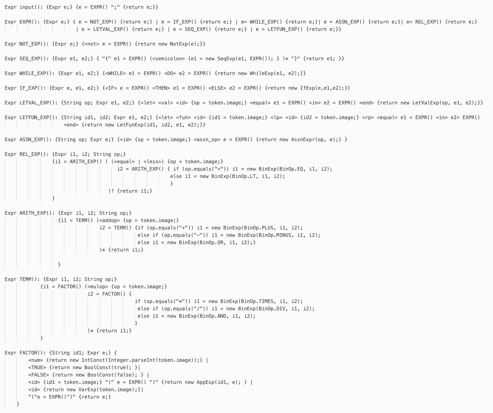

<html>
    <head>
        <link type="text/css" rel="stylesheet" href="pl.css">
    </head>

</html>

<a id = "arrow" href ="../../projects.html"><h2>&#8592;</h2></a>
<h1 id = "title">Parser and Interpreter Implementation</h1>


<body>
    <h1 class = "head">Project Overview</h1>
    <div id = "overviewdiv">
        <p>
            The main goal of this project is to create an interpreter for my project language. I accomplished this using Java and the JavaCC tool. 
            <br><br>Source code can be found at: <a href = "https://github.com/isabellaattisano/ProgrammingLanguageProject">github</a>
        </p>
     </div>

    <h1 class = "head">Project Language</h1>
    <div id = "overviewdiv">
        <p>
            To the right is the context-free syntax of the project language in Extended BNF notation. <br><br>This language combines imperative and functional features and is primarily based on SML. 
            The language is statically scoped and dynamically typed. 
        </p>
        </img>
     </div>


     <h1 class = "head">Parser Implementation</h1>
     <div id = "overviewdiv">
         <p>
            I first used the JavaCC tool to generate a purse parser, ProjLangParser, for my language. I expressed the language syntax using EBNF. 
            This parser was tested using the ParseMain.java file which created a ProjLangParser object and used input from standard input.  
        </p>
         </img>
      </div>

      <h1 class = "head">Interpreter Implementation</h1>
      <div id = "overviewdiv">
          <p>
            I then modified this parser so that I would be able to enforce static and dynamic semantic rules in addition to 
            ensuring syntatic validality. To implement semantic constructs into the project I modified the previous JavaCC parser by
            adding return types to the non-terminals as well as including actions in the grammar rules to the right of these non-terminals. 
            This allowed the parser to return an Abstract Syntax Tree (AST). 
        
            <br><br><b>Abstract Syntax Tree:</b>
            <br><br>In this project, the AST was simply an object that invokes the evaluator method defined for its class.  
            I defined an expression class, Expr.Java, that has several subclasses for each of the possible expressions that can
            be evaluated for this language. <br><br>These subclasses would be required to define their own evaluation methods that evaluates 
            the input per its semantic rules. For instance, I implemented a LetValExp and WhileExp subclass. 

            <br><br><b>Testing:</b>
            <br><br>This parser was tested using InterpretMain.java which created a ProjLangParser object and used input from standard input. It uses this
            input to create an expression object which would invoke its evaluation method. 
            


        </p>
            </img>
            
        </div>

      
</body>